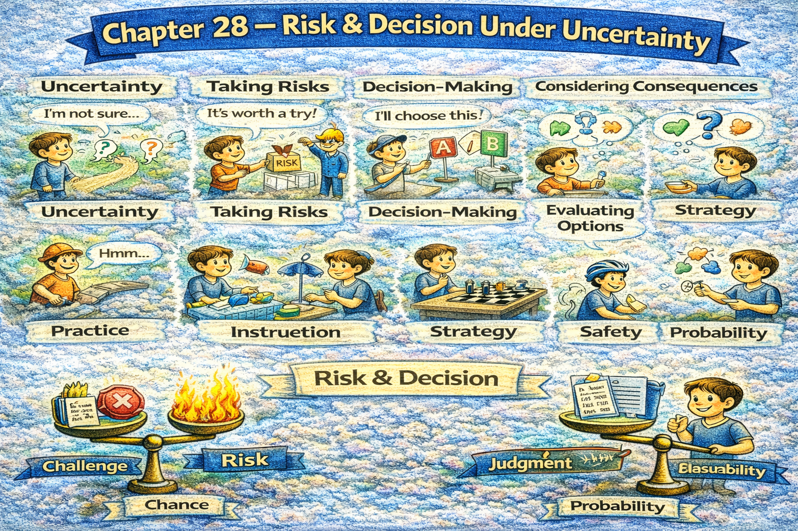

Chapter 28 — Risk & Decision Under Uncertainty

Micro Scene 1 — Defining Risk
1️⃣ Scene Text
Risk refers to the possibility of loss or undesirable outcome.
It combines uncertainty with consequence.
If probability increases, exposure intensifies.
Not all uncertainty constitutes risk; impact determines severity.
I distinguish between likelihood and magnitude.
High probability with low impact differs from low probability with high impact.
Risk must be evaluated relative to context.
When consequences compound, vulnerability expands.
Perceived risk may differ from actual risk.
Risk assessment requires both data and judgment.
Understanding risk precedes rational decision-making.
2️⃣ Core Verb Pool
refer
combine
increase
constitute
determine
distinguish
differ
evaluate
compound
expand
differ
require
precede
3️⃣ Structure Patterns
X refers to + noun
If X + verb, Y + verb
Not all X are Y
X differs from Y
X requires both A and B
X precedes Y
4️⃣ Replace & Extend
Replace likelihood:
High likelihood increases exposure.
→ Low probability reduces frequency.
→ Rare events may carry severe impact.
Replace impact:
Impact determines significance.
→ Consequence defines severity.
→ Magnitude shapes priority.
Replace assessment:
Risk assessment balances data and intuition.
→ Evaluation requires structured judgment.
→ Context determines tolerance.
5️⃣ Spoken Mode
Risk isn’t just uncertainty — it’s uncertainty plus consequence.
High probability isn’t the same as high danger.
You have to consider both likelihood and impact.
Understanding risk comes before making decisions.
🔎 Structural Notes
• Risk = probability × impact logic.
• Likelihood vs magnitude distinction.
• Context defines tolerance.
Micro Scene 2 — Risk Tolerance & Trade-Offs
1️⃣ Scene Text
Every decision reflects a level of risk tolerance.
Some individuals prioritize security, while others pursue opportunity.
If potential gain outweighs perceived loss, action becomes more likely.
Risk tolerance varies across context and time.
I evaluate whether exposure aligns with long-term objective.
Trade-offs clarify acceptable sacrifice.
When uncertainty increases, caution intensifies.
Excessive avoidance limits growth.
If risk is ignored entirely, vulnerability increases.
Balanced judgment weighs protection against potential reward.
Decision-making reveals underlying priorities.
2️⃣ Core Verb Pool
reflect
prioritize
pursue
outweigh
become
vary
evaluate
align
clarify
increase
intensify
limit
ignore
weigh
reveal
3️⃣ Structure Patterns
X reflects Y
If X + verb, Y + verb
X varies across + noun
When X + verb, Y + verb
X weighs A against B
4️⃣ Replace & Extend
Replace opportunity:
If upside potential increases…
→ If long-term reward is substantial…
→ If expected return improves…
Replace avoidance:
Avoidance reduces exposure.
→ Overprotection limits expansion.
→ Excessive caution restricts progress.
Replace balance:
Decision balances safety and growth.
→ Judgment weighs risk and reward.
→ Strategy aligns tolerance with objective.
5️⃣ Spoken Mode
Every decision shows how much risk you’re willing to take.
If the upside looks strong, action feels justified.
Too much caution limits growth.
You have to weigh risk against reward.
🔎 Structural Notes
• “weigh A against B” = trade-off structure.
• Risk tolerance varies by context.
• Avoidance vs growth tension.
Micro Scene 3 — Decision Under Incomplete Information
1️⃣ Scene Text
Most decisions are made with incomplete information.
Waiting for perfect certainty often results in paralysis.
If additional data does not change the decision materially, delay becomes costly.
I distinguish between necessary analysis and overanalysis.
Incomplete information requires probabilistic judgment.
When uncertainty cannot be eliminated, exposure must be managed.
Timely action may outweigh exhaustive verification.
If opportunity is time-sensitive, hesitation reduces advantage.
Decision quality depends on reasoning, not outcome alone.
Rational choice operates within bounded knowledge.
Effective leaders decide despite uncertainty.
2️⃣ Core Verb Pool
make
wait
result
change
distinguish
require
eliminate
manage
outweigh
reduce
depend
operate
decide
3️⃣ Structure Patterns
Most X are + past participle
If X + verb, Y + verb
X requires + noun
When X + verb, Y + verb
X depends on Y
X operates within + noun
4️⃣ Replace & Extend
Replace paralysis:
Waiting creates delay.
→ Excessive analysis causes stagnation.
→ Overthinking reduces momentum.
Replace bounded knowledge:
We operate within limited data.
→ Decisions rely on partial visibility.
→ Judgment functions under constraint.
Replace time sensitivity:
If timing matters…
→ If opportunity narrows…
→ If conditions shift rapidly…
5️⃣ Spoken Mode
You rarely have perfect information.
Waiting too long can cost you.
At some point, you have to decide with what you know.
Good decisions aren’t always perfect — they’re timely.
🔎 Structural Notes
• “bounded knowledge” expresses epistemic limitation.
• Decision quality ≠ outcome certainty.
• Timeliness balances uncertainty.
Micro Scene 4 — Managing Downside Risk
1️⃣ Scene Text
Effective decision-making requires limiting potential downside.
Upside attracts attention, but downside determines survival.
If loss exceeds capacity, recovery becomes unlikely.
I calculate worst-case exposure before committing resources.
Risk management focuses on containment rather than elimination.
When vulnerability is concentrated, fragility increases.
Diversification reduces single-point failure.
If safeguards are absent, minor shocks escalate.
Protection mechanisms stabilize performance.
Downside control preserves long-term viability.
Sustainable growth requires controlled exposure.
2️⃣ Core Verb Pool
require
limit
attract
determine
exceed
become
calculate
commit
focus
increase
reduce
escalate
stabilize
preserve
3️⃣ Structure Patterns
X requires + noun
If X + verb, Y + verb
X focuses on A rather than B
When X + verb, Y + verb
X preserves Y
4️⃣ Replace & Extend
Replace exposure:
Limit exposure to catastrophic loss.
→ Cap potential downside.
→ Protect against extreme scenarios.
Replace diversification:
Diversified strategy reduces fragility.
→ Multiple revenue streams stabilize income.
→ Redundant systems increase resilience.
Replace escalation:
Small shocks escalate without safeguards.
→ Minor errors compound without control.
→ Weak buffers amplify disturbance.
5️⃣ Spoken Mode
Protecting the downside keeps you alive.
Big gains don’t matter if one loss wipes you out.
Diversify so one failure doesn’t destroy everything.
Control risk before chasing reward.
🔎 Structural Notes
• Downside determines survival threshold.
• Diversification = anti-fragility mechanism.
• Exposure must remain within recovery capacity.
Micro Scene 5 — Scenario Thinking & Contingency Planning
1️⃣ Scene Text
Scenario thinking prepares the mind for multiple possible futures.
Instead of predicting a single outcome, I evaluate alternative paths.
If conditions shift unexpectedly, preparedness reduces shock.
Contingency planning anticipates disruption before it occurs.
I outline best-case, base-case, and worst-case scenarios.
When uncertainty expands, structured planning increases confidence.
Scenarios clarify decision boundaries.
If early warning signals appear, adjustment becomes faster.
Preparation does not eliminate uncertainty; it reduces vulnerability.
Flexibility improves response speed.
Strategic foresight strengthens resilience.
2️⃣ Core Verb Pool
prepare
predict
evaluate
shift
reduce
anticipate
outline
expand
increase
clarify
appear
improve
strengthen
3️⃣ Structure Patterns
X prepares Y for + noun
Instead of + verb-ing A, I + verb B
If X + verb, Y + verb
When X + verb, Y + verb
X does not eliminate A; it reduces B
X strengthens Y
4️⃣ Replace & Extend
Replace contingency:
I prepare backup options.
→ I design fallback plans.
→ I allocate reserves for uncertainty.
Replace boundary:
Scenarios define limits.
→ Planning clarifies tolerance thresholds.
→ Forecasting identifies critical triggers.
Replace foresight:
Strategic foresight reduces surprise.
→ Preparation stabilizes reaction.
→ Anticipation improves timing.
5️⃣ Spoken Mode
Don’t plan for just one future.
Think through best and worst cases.
Preparation doesn’t remove risk — it reduces shock.
Have a backup before you need it.
🔎 Structural Notes
• “Instead of…, I…” signals strategic alternative.
• Scenario planning reduces volatility impact.
• Preparation enhances reaction speed.
Micro Scene 6 — Decisiveness Under Uncertainty
1️⃣ Scene Text
Decisiveness distinguishes leadership from hesitation.
Uncertainty does not eliminate responsibility.
If risk is evaluated thoroughly, action becomes justified.
Indecision often carries hidden cost.
I accept that no choice guarantees certainty.
When delay exceeds opportunity, advantage declines.
Decisiveness requires confidence calibrated to evidence.
If information improves, decisions can be revised.
Commitment reduces ambiguity for others.
Leadership balances caution with resolve.
Clarity under uncertainty builds trust.
2️⃣ Core Verb Pool
distinguish
eliminate
evaluate
justify
carry
accept
exceed
decline
require
calibrate
improve
revise
reduce
balance
build
3️⃣ Structure Patterns
X distinguishes A from B
If X + verb, Y + verb
X requires + noun
When X + verb, Y + verb
X balances A with B
X builds Y
4️⃣ Replace & Extend
Replace hesitation:
Indecision increases uncertainty.
→ Delay compounds opportunity cost.
→ Prolonged hesitation weakens momentum.
Replace calibration:
Confidence must match evidence.
→ Resolve should scale with risk.
→ Commitment must align with analysis.
Replace revision:
If new data emerges…
→ If context shifts…
→ If assumptions collapse…
5️⃣ Spoken Mode
Uncertainty doesn’t remove responsibility.
At some point, you have to decide.
Waiting too long is also a decision.
Confidence should match the evidence.
🔎 Structural Notes
• Decision quality ≠ outcome guarantee.
• Indecision carries implicit risk.
• Calibrated confidence = mature judgment.
🔸 Final Integration — Decision Structure
Risk combines uncertainty and consequence.
Tolerance varies by objective.
Information is rarely complete.
Downside defines survival threshold.
Scenarios reduce vulnerability.
Preparation improves resilience.
Probability guides judgment.
Trade-offs clarify priority.
Delay carries cost.
Exposure must be controlled.
Diversification protects continuity.
Evidence calibrates confidence.
Leadership requires commitment.
Decisions operate within uncertainty.
Judgment balances caution and action.
Mature thinking accepts risk.